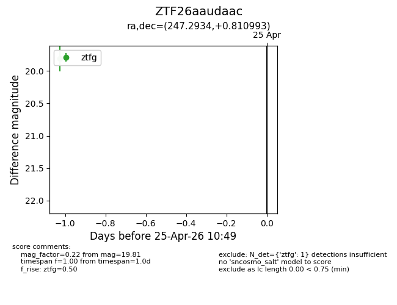
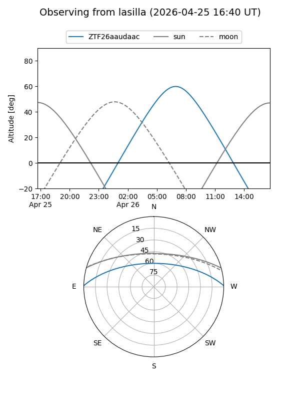
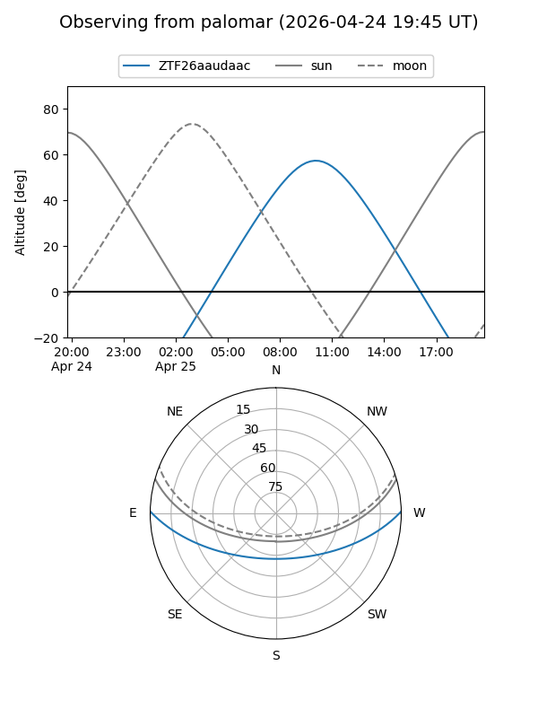

ZTF26aaudaac
Target ZTF26aaudaac at 2026-04-25 10:50
Aliases and brokers:
FINK: link
Lasair: link
ALeRCE: link
alt names
ZTF26aaudaac (ztf,fink_ztf)
Coordinates:
equatorial (ra, dec) = 247.2934,+0.81099
equatorial (HMS+DMS) = 16:29:10.41,+00:48:39.57
galactic (l, b) = (15.6794,+31.60474)
Flags:
Photometry:
last ztfg=19.81
1 ztfg detections
Lightcurve

Visibility


Additional plots